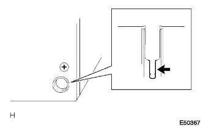
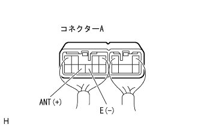

オーディオシステム ラジオが受信できない(受信状態が悪い) |
| 手順1 | 車両移動点検 |
車両移動
車両をラジオ放送が受信できる場所に移動し、機能が正常に戻るか点検する。
|
| ||||
| NG | |
| 手順2 | 後付け部品点検（サンシェードフィルム、電話アンテナ等） |
後付け部品点検
サンシェードフィルムおよび電話アンテナなどの後付け部品が装着されているか点検する。
|
| ||||
| OK | |
| 手順3 | アンテナ雑音発生点検 |
 |
アンテナ雑音発生点検
ＩＧスイッチＡＣＣで、ラジオの電源を入れ、ＡＭモードにする。
クオータウインドウASSY ＲＨのアンテナ端子露出部にドライバーを接触させたとき、スピーカから雑音が発生することを点検する。
|
| ||||
| OK | |
| 手順4 | ウインドゥプリント式アンテナ断線点検 |
 |
ウインドゥプリント式アンテナ断線点検
 |
SST(トヨタエレクトリカルテスター)を使用して、プリント式アンテナにテスター棒を当てていき、導通がなくなる箇所がないかを点検する。
|
| ||||
| OK | ||
| ||
| 手順5 | ラジオ レシーバASSY点検 |
|  |
点検前準備
ラジオレシーバASSYを取り外せる状態にする。
アンテナのプラグを切り離す。
雑音発生点検
ラジオレシーバーASSYのコネクターを接続状態で、IGスイッチをACCにする。
ラジオの電源を入れ、AMモードにする。
ラジオレシーバASSYのアンテナジャック部に薄刃マイナスドライバーまたは細い針金等の金属を接触させたとき、スピーカーから雑音が発生することを点検する。
電圧点検
|  |
SST(トヨタエレクトリカルテスター)を使用して、車両側ワイヤハーネスのコネクターを接続した状態で、コネクターの裏側からANT(A8)←→E(A7)間の電圧を点検する。
| テスター接続 | 測定条件 | 基準値 |
|---|---|---|
| ANT(A8)←→E(E7) | ラジオ(AM/FM)受信中 | 10-14V |
|
| ||||
| OK | |
| 手順6 | アンテナコードNo.2点検 |
点検前準備
アンプリファイヤアンテナASSYとアンテナコードNo.2の接続部が見えるようにする。
アンプリファイヤアンテナASSYとアンテナコードNo.2の接続部のコネクターを切り放す。
雑音発生点検
ラジオレシーバーASSYのコネクターを接続した状態で、IGスイッチをACCにする。
ラジオの電源を入れ、AMモードにする。
アンテナコードのアンテナジャック部に薄刃マイナスドライバーまたは細い針金等の金属を接触させたとき、スピーカーから雑音が発生することを点検する。
電圧点検
SST(トヨタエレクトリカルテスター)を使用して、アンテナコードNo.2コネクターの裏側からANT(1)端子←→ボデーアース間の電圧を点検する。
| テスター接続 | 測定条件 | 基準値 |
|---|---|---|
| ANT(1)←→ボデーアース | ラジオ(AM/FM)受信中 | 10-14V |
|
| ||||
| NG | |
| 手順7 | アンテナ コードSUB-ASSY点検 |
点検前準備
アンテナコードNo.2とアンテナコードの接続部が見えるようにする。
アンテナコードNo.2とアンテナコードの接続部を切り離す。
雑音発生点検
ラジオレシーバASSYのコネクタを接続した状態で、IGスイッチをACCにする。
ラジオの電源を入れ、AMモードにする。
アンテナコードのアンテナジャック部に薄刃マイナスドライバーまたは、細い針金等の金属を接触させた時、スピーカーから雑音が発生することを点検する。
 |
電圧点検
SST(トヨタエレクトリカルテスター)を使用して、アンテナコードコネクタの裏側からANT(1)端子←→ボデーアース間の電圧を点検する。
| テスター接続 | 測定条件 | 基準値 |
|---|---|---|
| ANT(1)←→ボデーアース | レジオ(AM/FM)受信中 | 10-14V |
|
| ||||
| NG | ||
| ||